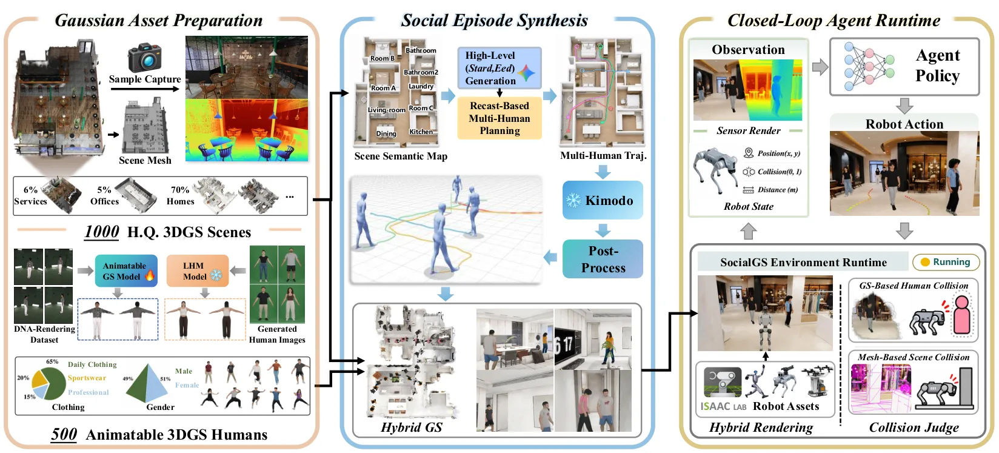
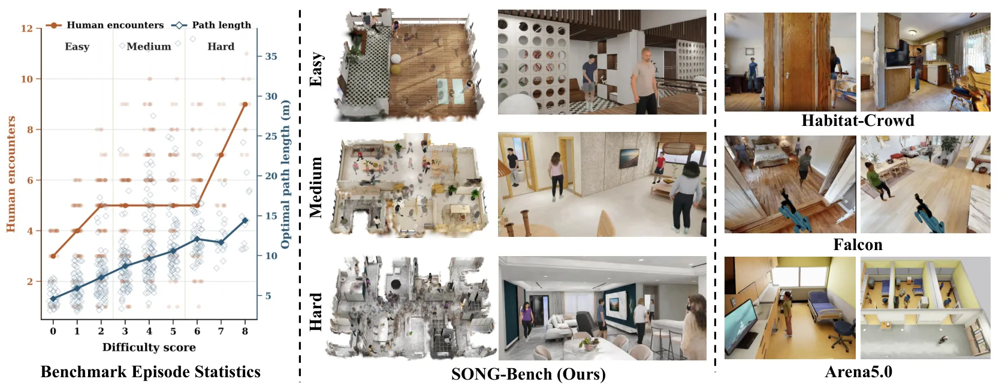
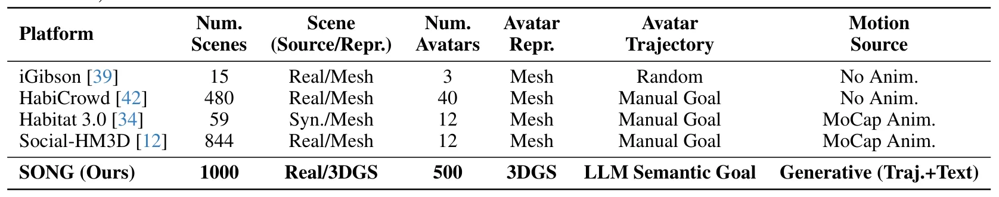
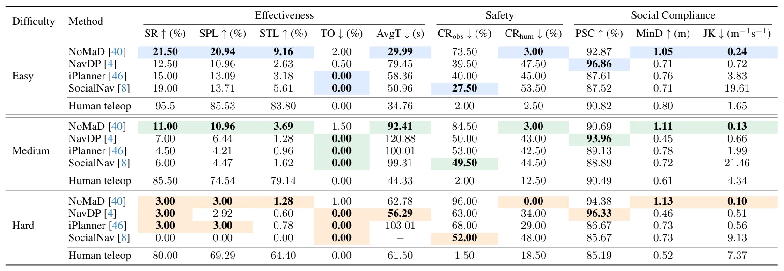

SONG：用于社会导航评测的照片级 3D Gaussian 仿真平台SONG: A Photorealistic 3D Gaussian Simulation Platform for Benchmarking Social Navigation
为视觉导航提供高保真仿真和安全/社会性评测，但论文重点不是 SLAM；传感器 ground truth、可重复性和 sim-to-real 量化需进一步确认。
一句话工作总结
用 3DGS 场景与行人、语义轨迹和人体运动生成构建照片级社会导航平台及多维 benchmark。
摘要
SONG 是由 3D Gaussian Splatting 驱动的 social navigation 平台，以 3DGS 表示场景和 avatar，使用大语言模型生成 semantically grounded pedestrian trajectories，再由 trajectory-conditioned generator 合成连续自然的全身运动。配套 SONG-Bench 按难度组织 evaluation episodes，并以 effectiveness、safety 与 social compliance 构成多维指标。对代表性导航 baseline 的评估表明，vision-based social navigation 尚未解决、安全缺口先于礼仪问题、真实数据的影响大于模型规模；使用平台整理的数据 fine-tuning 可改善真实环境成功率。
Social navigation has progressed from simplified 2D environments toward a more general vision-based setting, in which a robot needs to achieve socially compliant behavior purely from onboard visual observations. Yet supporting simulation platforms have not kept pace: existing options either lack visual observations, lack moving human avatars, or fall short of real-world fidelity in appearance and pedestrian behavior, offering limited support for advancing vision-based social navigation. We introduce SONG, a SOcial Navigation platform powered by 3D Gaussian splatting (3DGS). It leverages 3DGS for both scene and avatar representations, drives pedestrians using semantically grounded trajectories generated by a large language model, and synthesizes their full-body motion with a trajectory-conditioned generator to produce continuous, natural movement. On top of the platform, we curate SONG-Bench, a set of evaluation episodes stratified by difficulty, and propose a multi-dimensional metric suite covering effectiveness, safety, and social compliance. A systematic evaluation of representative navigation baselines reveals three findings: (a) vision-based social navigation is far from solved; (b) a critical safety deficit precedes social etiquette; (c) real-world data matters more than model scale. Crucially, we demonstrate that fine-tuning on our curated data effectively improves the success rate in real-world environments. We hope our platform provides a faithful and rigorous testbed for the next generation of vision-based social navigation research.
中文解读摘录
- 作者：Weiqi Huang, Dianyi Yang, Jiaxin Li, Shuangyi Dong, Hao Xu, Zan Wang, Wei Liang
- 价值判断：以 3DGS 同时表示场景和 avatar，配合语义轨迹与人体运动生成，为 vision-based social navigation 提供更真实的训练和评测环境。
- 结果与边界：平台与 SONG-Bench 覆盖 effectiveness、safety、social compliance；摘要认为现实数据影响大于模型规模。需核查 simulator determinism、depth/semantic ground truth、传感器噪声和 sim-to-real 的量化设置。
- 链接：arXiv · PDF
图表/页面预览

{kind=link}

{kind=link}

{kind=link}

{kind=link}
